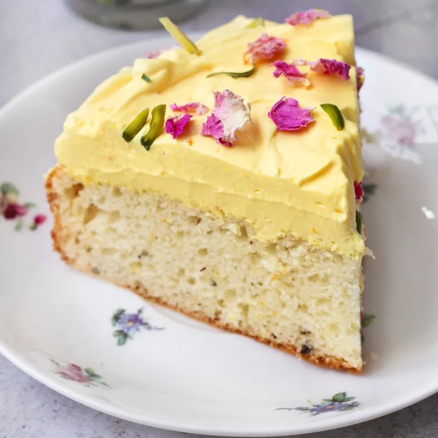

Saffron Cake
Ingredients:
- 1/2 teaspoon Saffron Strands
- 150ml Boiling Whole Milk
- 500g Strong Plain White Flour
- 125g Butter, cold and cubed
- 125g Lard, cold and cubed
- Pinch of salt
- 1/4 teaspoon grated Nutmeg
- 250g Currants
- 50g Caster Sugar + 2 tsp
- 1 teaspoon Dried Yeast
- 100ml Lukewarm Water
On the evening before you plan to bake the saffron cake, heat the milk until it boils, then pour it over the saffron strands, preferably in a glass bowl. Allow this mixture to infuse overnight.
On the day of baking, mix the dried yeast with 2 teaspoons of caster sugar and 100ml of lukewarm water (water slightly cooled after boiling works well). Stir this mixture and let it sit for 20 minutes, until it begins to foam.
In the meantime, place the strong flour and salt in a large mixing bowl. Rub in the butter and lard until the mixture resembles breadcrumbs. Stir in the currants, grated nutmeg, and 50g of caster sugar.
Create a well in the centre of these dry ingredients and pour in the saffron-infused milk and the yeasty water. Combine everything to form a soft dough. Turn it out onto a floured surface. If the mixture is too dry, add a little more warm water; if it's too wet, incorporate some more strong flour.
Knead the dough for 10 minutes, then place it in a clean bowl, covering it with cling film. Allow it to prove for 2 hours.
After proving, punch the dough down and knead it for a few more minutes. Place the dough into a lightly oiled 2lb loaf tin and let it prove for another 45 minutes to an hour. In colder weather, you might need to extend the proving time slightly.
Preheat the oven to 180°C (160°C fan/ Gas 4) and bake the cake for 1 hour to 1 hour and 10 minutes.
Allow the cake to cool in the tin for a short while before turning it out to slice and serve.